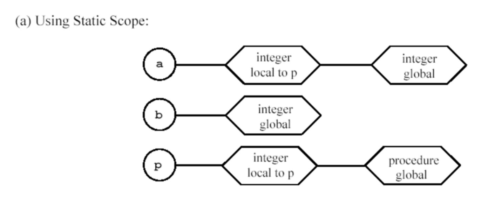
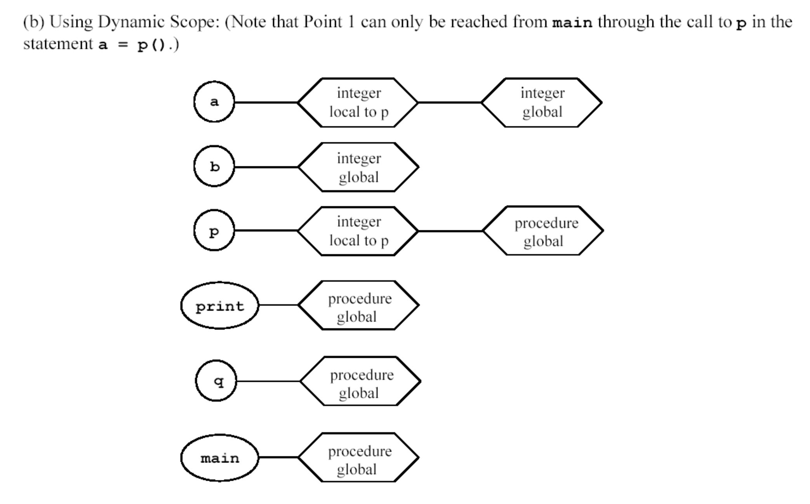

Homework Assignment 6
Due: Monday Oct 18
Purpose: Using the regular expression tool. Explore attributes
and bindings of variables.
You can work in teams of 2 people.
Reading/References:
- Chapter 5 and start chapter 6
- See Unix/Linux man pages or the following:
Assignment:
- Purpose of exercise 1 and 2 is to illustrate the power of regular
expression tools in
scripting languages. These exercises employ the Unix/Linux utitilies grep and sed, however, many scripting
languages and editors (i.e. perl, emacs, Word, awk, Python) use
REs. Java's String class allows the use of REs. Download the
Gzip'd Text archive of the
Grome developers Sept's mailing list from the gnome-devel-list
Archives. Using either a MacsOS, Unix, Linux or cygwin unzip
the
file to recover a text file. (You can use gunzip to unzip the
file.) Grep uses regular expressions to match text in
files. For example: (done using cygwin)
- $ grep
"^[^LT].*http:.*\.org" 2004-September.txt
- command matches all lines in the file, 2004-September.txt, that
don't begin with a 'L' or 'T' and have a URL in the domain of 'org'.
Turn in a grep command (may use use egrep or zgrep instead) command
that uses the regular expression tool to print out the following
selected information:
- to list all sender from the domain gmail.com.
- Your output format will look like:
- From jmmv84@gmail.com Thu Sep 2 17:07:58 2004
...
From kalle.vahlman@gmail.com Wed Sep 29 04:45:37 2004
From: Kalle Vahlman <kalle.vahlman@gmail.com>
From gamehack@gmail.com Wed Sep 29 10:44:06 2004
From: gamehack <gamehack@gmail.com>
From kalle.vahlman@gmail.com Thu Sep 30 03:53:37 2004
From: Kalle Vahlman <kalle.vahlman@gmail.com>
From joe.gasiorek@gmail.com Thu Sep 30 12:20:51 2004
From: Joe Gasiorek <joe.gasiorek@gmail.com>
From kalle.vahlman@gmail.com Thu Sep 30 16:06:44 2004
From: Kalle Vahlman <kalle.vahlman@gmail.com>
From iaingnome@gmail.com Thu Sep 30 17:36:15 2004
From: Iain * <iaingnome@gmail.com>
- to list all lines that begin the X-List and recieved on Sept.
16.
- Pipes allow the user to glue Unix/Linux command together.
For example to output the lines described in the example above but
sorted
by the
first column concatenate "| sort " to the command. i.e.
- grep
"^[^LT].*http:.*\.org" 2004-September.txt | sort
- To remove duplicate consecutive lines concatenate " | uniq" to
this command. To save the output strings in a file named
gmailAdd.txt instead of printing the output on the screen, concatenate
" > gmailAdd.txt" to this command.
- Write a command composed of grep and sed commands to produce
the following output from 2004-September.txt.
- jmmv84@gmail.com Thu Sep 2 17:07:58 2004
....
kalle.vahlman@gmail.com Wed Sep 29 04:45:37 2004
Kalle Vahlman <kalle.vahlman@gmail.com>
gamehack@gmail.com Wed Sep 29 10:44:06 2004
gamehack <gamehack@gmail.com>
kalle.vahlman@gmail.com Thu Sep 30 03:53:37 2004
Kalle Vahlman <kalle.vahlman@gmail.com>
joe.gasiorek@gmail.com Thu Sep 30 12:20:51 2004
Joe Gasiorek <joe.gasiorek@gmail.com>
kalle.vahlman@gmail.com Thu Sep 30 16:06:44 2004
Kalle Vahlman <kalle.vahlman@gmail.com>
iaingnome@gmail.com Thu Sep 30 17:36:15 2004
Iain * <iaingnome@gmail.com>
- Concatenate to part A's command such that the new command
generates and saves the following output :
- jmmv84@gmail.com Thu Sep 2 2004
jmmv84@gmail.com Mon Sep 6 2004
jmmv84@gmail.com Tue Sep 7 2004
kalle.vahlman@gmail.com Thu Sep 16 2004
gamehack@gmail.com Thu Sep 16 2004
gamehack@gmail.com Sat Sep 25 2004
kalle.vahlman@gmail.com Wed Sep 29 2004
gamehack@gmail.com Wed Sep 29 2004
kalle.vahlman@gmail.com Thu Sep 30 2004
joe.gasiorek@gmail.com Thu Sep 30 2004
kalle.vahlman@gmail.com Thu Sep 30 2004
iaingnome@gmail.com Thu Sep 30 2004
- Give an examples that shows the semantics of "const" in C is
different than its semantics in C++.
- The keyword static has two different
semantics in Ansi C depending on where it is used, either inside a
function
definition or outside of a function definition. What does static
mean in both settings?
- page 180 exercise 5.7
- page 183 exercise 5.16
- page 183 exercise 5.17 (only Java and C++)
- page 184 exercise 5.18 (C and C++ only)
- page 185 exercise 5.24
- page 185 exercise 5.26
- Page 181 exercise 5.8.
- This is the simple symbol table using lexical scoping at
point 1. You need to do it for points 2 and 3 as well as what is
printed using lexical scoping.
- 
- This is the simple symbol table using dynamic scoping at
point 1. You need to do it for points 2 and 3 as well as what is
printed using dynamic scoping.
- 